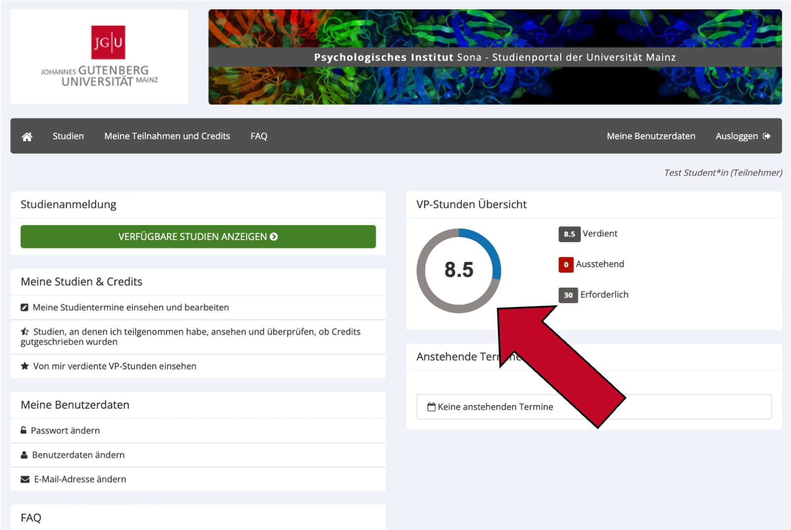

4 Vergütung und Versuchspersonenstunden
4.1 Welche Art von Vergütung kann ich bekommen?
Für die Teilnahme an einer Studie in Sona können Sie entweder Versuchspersonen-Stunden (VP-Stunden) oder Geld erhalten. In einigen Fällen können Sie sich aussuchen, ob Sie die VP-Stunden oder Geld erhalten wollen. Eine doppelte Vergütung (im Sinne von VP-Stunden und Geld oder VP-Stunden und der Teilnahme an einer Lotterie o.Ä.) ist in der Regel nicht vorgesehen.
4.2 Wie viele VP-Stunden kann ich für die Teilnahme an einer Studie bekommen?
Die Anzahl der Versuchspersonen-Stunden (VP-Stunden), die Sie für die Teilnahme an einer Studie erhalten, entspricht der Dauer der Studie. Bei Laborstudien zählt die ggf. nötige Vorbereitung und Nachbereitung des Experiments selbstverständlich zur Dauer dazu. Da die kleinste Einheit einer VP-Stunde ein halbe VP-Stunde (0,5) ist, wird im Zweifelsfall aufgerundet.
- Beispiel 1: Eine Online-Studie dauert 10 Minuten. Für die Teilnahme erhalten Sie 0,5 VP-Stunden.
- Beispiel 2: Eine Laborstudie dauert 75 Minuten. Für die Teilnahme erhalten Sie 1,5 VP-Stunden.
Wie lange eine Studie dauert und wie viele VP-Stunden Sie dafür erhalten, sehen Sie in der Studienübersicht und in der Detailansicht der Studie. Bei Laborstudien kann es vorkommen, dass die Studie länger dauert als geplant. In diesem Fall kann der*die Forscher*in die an Sie vergebenen VP-Stunden anpassen. Dies ist ebenso der Fall, wenn Sie eine Laborstudie vorzeitig abbrechen. Dann erhalten Sie so viele VP-Stunden, wie Sie Zeit im Experiment verbracht haben. Für Online-Studien erhalten Sie immer die angegebene Anzahl an VP-Stunden, da nicht geprüft wird, wie lange Sie tatsächlich für die Studie gebraucht haben.
4.3 Wann werden mir die VP-Stunden gutgeschrieben?
Nachdem Sie an einer Laborstudie teilgenommen haben, schreibt Ihnen der*die Forscher*in die VP-Stunden innerhalb der nächsten drei Werktage gut. Sollten Sie innerhalb einer Woche keine VP-Stunden für die Teilnahme an einer Laborstudie erhalten haben, kontaktieren Sie den*die Forscher*in bitte per E-Mail.
Bei Online-Studien kann die Gutschrift von VP-Stunden entweder automatisch oder manuell durch den*die Forscher*in erfolgen. Bei einer automatischen Vergabe werden Sie von der letzten Seite der Online-Studie aus mit einem Link zu Sona zurückgeleitet, der Ihnen automatisch die angegebenen VP-Stunden vergibt. Sollten Sie während dieses Prozesses eine Fehlermeldung von Sona erhalten, machen Sie bitte einen Screenshot von Ihrem Display und wenden Sie sich umgehend per E-Mail an den*die verantwortliche*n Forscher*in („researcher“) der Studie.
Eine manuelle Vergabe von VP-Stunden für Online-Studien kann deutlich länger dauern, da diese oft erst nach Ende der Erhebung für alle Teilnehmer*innen gleichzeitig gutgeschrieben werden. Somit erhalten Sie Ihre VP-Stunden nach der Teilnahme an einer solchen Online-Studie oft erst mehrere Wochen später. Sollten Sie die VP-Stunden dringend benötigen, kontaktieren Sie den*die Forscher*in bitte per E-Mail.
4.4 Wo sehe ich, wie viele VP-Stunden ich schon gesammelt habe?
Eine schnelle Übersicht über Ihre bereits gesammelten VP-Stunden finden Sie direkt im Hauptmenü rechts oben.

Um in die Detailansicht zu gelangen, klicken Sie im Menü auf Meine Teilnahme und Credits.

- Im oberen Teil der erscheinenden Seite sehen Sie eine Übersicht, wie viele VP-Stunden Sie bereits verdient haben, wie viele ausstehend sind und wie viele VP-Stunden Sie für Ihren Kurs insgesamt benötigen. „Ausstehend“ bedeutet, dass Sie bereits an Studien teilgenommen haben, für die Ihnen die dort angezeigte Anzahl an VP-Stunden noch nicht gutgeschrieben wurde.
- Im Abschnitt darunter befindet sich eine Auflistung aller Studien, für die Sie angemeldet sind oder an denen Sie bereits teilgenommen haben.
4.5 Wie übertrage ich E-Mail/Papier-Belege für VP-Stunden, die ich bereits gesammelt habe, auf mein Sona Konto?
Dieser Weg gilt sowohl für VP-Stunden, die Sie bereits vor der Einführung von Sona gesammelt haben, als auch für VP-Stunden, die Sie bereits an einer anderen Universität gesammelt haben (z.B. bei Studienortswechsel). Bitte beachten Sie: Wenn Sie VP-Stunden von einer anderen Universität anerkennen lassen wollen, ist dies nur innerhalb Ihres ersten Semesters an der Johannes-Gutenberg-Universität Mainz möglich.
- Falls Sie Papier-Belege haben, scannen Sie diese zunächst ein.
- Fassen Sie alle E-Mail-Belege und digitalisierte Papier-Belege in einem PDF-Dokument zusammen. Für die Zusammenfassung von PDF-Dokumenten gibt es zahlreiche Online Tools.
- Senden Sie dieses eine PDF-Dokument mit dem Betreff „VP-Stunden Anerkennung“ und unter der Angabe der folgenden Daten an sona@uni-mainz.de:
- Name
- Studiengang
- Matrikelnummer
- Studentische E-Mail Adresse
Die Administration wird Ihnen die VP-Stunden binnen eines Monats gutschreiben.
4.6 Wie reiche ich meine VP-Stunden beim Prüfungsamt ein?
Sobald Sie alle benötigten VP-Stunden für Ihren Studiengang gesammelt haben, können Sie diese beim Prüfungsamt einreichen. Eine eigenständige Anmeldung in Jogustine ist nicht notwendig. Gehen Sie dabei wie folgt vor.
- Loggen Sie sich mit Ihrem Benutzernamen unter https://uni-mainz-jgu.sona-systems.com ein.
- Klicken Sie im Menüstreifen auf
Meine Teilnahmen und Credits. - Klicken Sie oben rechts auf den Knopf
Download, um eine PDF-Übersicht Ihrer gesammelten VP-Stunden herunterzuladen.

- Bitte senden Sie diese PDF-Übersicht zusammen mit Ihrem Namen, Studiengang und Ihrer Matrikelnummer an Pruefungsamt-Psychologie@uni-mainz.de.